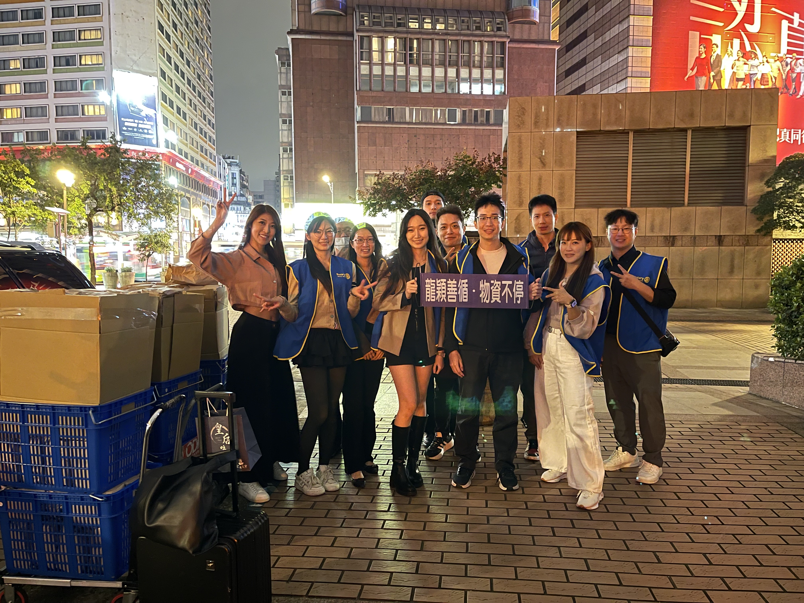
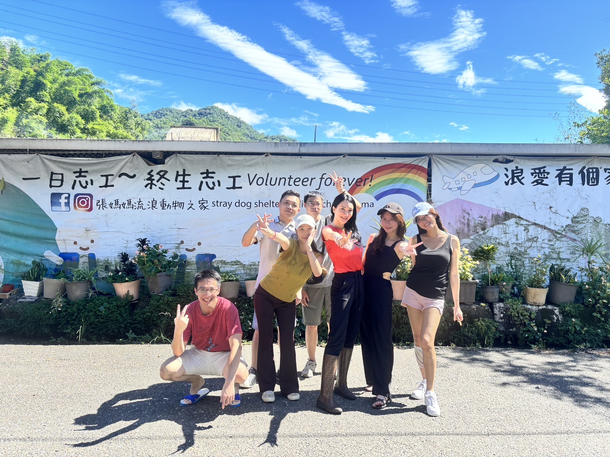

不只是紀錄
更是服務的溫暖
把每次付出，留成我們共同的故事
01. 核心願景：品牌說書人
核心理念
公益本來就不是說明績效
而是展現一種不間斷的生活態度
品牌任務
我們不拍排場 我們拍互動
讓畫面說出扶輪人的愛
02. 日常足跡：愛在每個角落
每個月的龍心穎手與龍穎善循，是我們社最厚實的根基。
龍心穎手
定期陪伴關愛之家小朋友。透過影像留住孩子們的純真笑臉，這是龍穎社最柔軟、也最持久的溫暖力量。

請放入龍穎善循活動照片
龍穎善循
走入北車遞送物資給街友。紀錄每一次雙手的交握，這份走入基層的踏實感，讓大眾看見扶輪人對人道關懷的承諾。
03. 服務亮點：多元行動，綻放龍穎
除了每月的恆常服務，龍穎社透過多樣化的行動，擴大公益的影響面。
龍穎公益音樂會
由社友與社友樂團親自登台演出。這不僅是一場音樂饗宴，更是龍穎社透過才藝與資源整合，將公益與文化優雅結合的高質感呈現。

請放入流浪動物之家活動照片
張媽媽流浪動物之家
走進流浪動物之家擔任清掃與關懷志工。展現龍穎社對生命的多元尊重與對不同社會議題的實際行動，體現全方位的服務精神。
04. 偏鄉醫療：歷年傳承
溫暖的傳承與擴大，將醫療資源送達最需要的地方。
復興鄉：可愛教會義診
我們在可愛教會成功舉辦了義診，透過當時珍貴的照片與影片，我們證明了龍穎社深耕偏鄉的執行力與決心。
羅浮里：三里大聯合義診
延續去年的感動與成績，今年在區長的大力支持下，活動已於寬闊的羅浮里辦公室圓滿落幕！
我們成功將醫療服務、骨科、皮膚科、牙科及義剪資源，擴展至周邊三個里的里民。感謝所有熱血參與的 80 位志工與醫療團隊，讓愛心觸及更廣闊的偏鄉角落。
完整活動花絮與報導紀錄，請欣賞下方影片
服務在龍穎，感動在人心！
回到 3/22，羅浮里義診現場
這一天，我們走進復興鄉羅浮里，用服務、陪伴與影像，留下偏鄉義診的真實溫度
龍穎公益足跡
服務未完，故事繼續